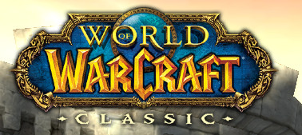
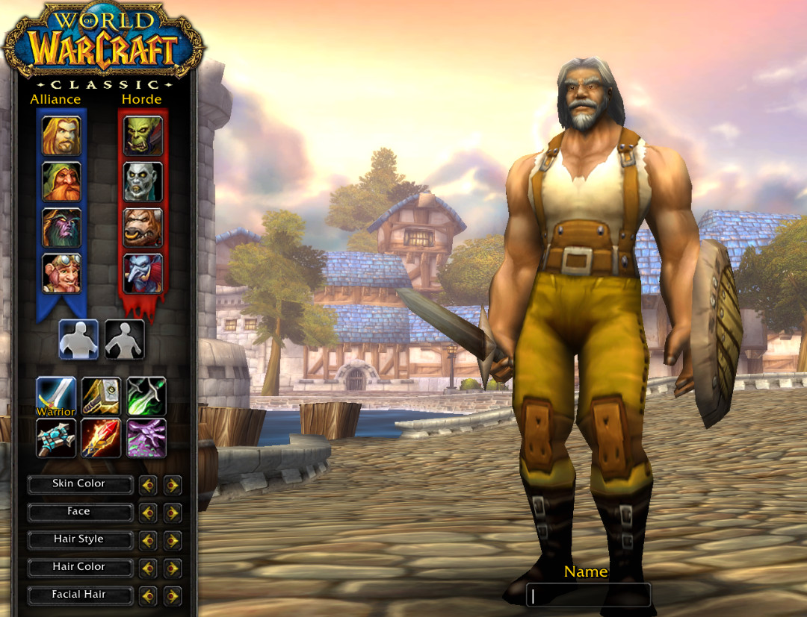
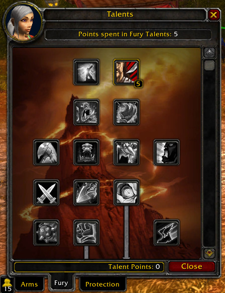
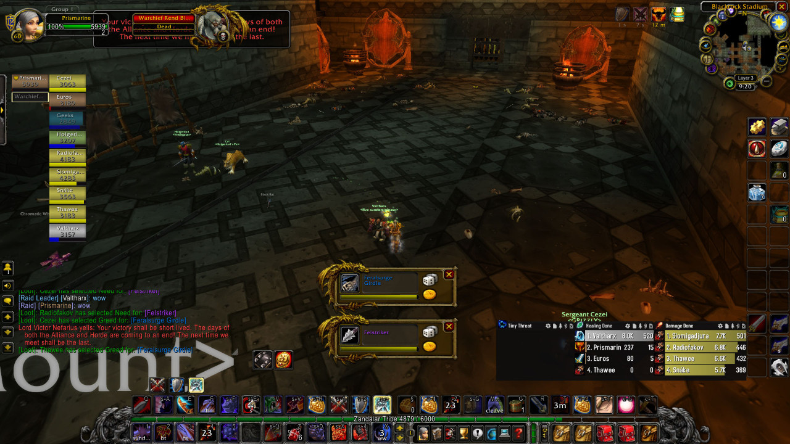
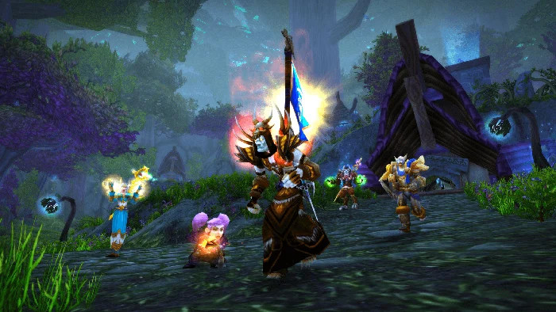

World of Warcraft

World of warcraft is one of the games I have been playing in my freetime. The game itself is an MMORPG that has different versions of the game with active playerbases on all versions of the game. In the wow community people usually divide world of warcraft into two different categories which are retail and classic. World of Warcraft retail is the latest version of the game and World of warcraft classic is the older version of the game that has a lot of different versions. So what is the difference between retail and classic? Simply put, the classic version is a lot simpler than the retail version. In classic everything is easier, you get less buttons that you can press per class, dungeons and raids are easier and the world feels more alive since it’s smaller. In retail everything has gone so far that every class can basically do anything and got a lot more buttons to press, dungeons and raids are also a lot harder that far less people can complete than in classic and the world is also a lot bigger which means you never really find anyone since the playerbase is spread around a much larger area.
What version do I play?
Out of all the world of warcraft versions I play the first version of the game. I find it more simple and fun than the other versions of the game. It is a game where I can pretty much do whatever I want at any given time. If I wanna go do a dungeon/raid I can look for it in the groupfinder, if I want to pvp I can queue up for it at the battlemaster or do it in the open world, or if I wanna play alone and relax I can either farm resources in the open world from nodes/herbs or grind mobs.
Classes
In World of Warcraft classic there are 9 classes: Warrior, Paladin, Shaman, Priest, Druid, Hunter, Rogue, Mage and Warlock. Every class can either tank, heal and dps or do a mix of all of them. Paladins and Druids are hybrids they can choose to either tank, heal or dps. Hunter, Rogue, Mage and Warlocks are pure dps classes and can only do damage. Shaman and Priest can choose to either heal or dps and warriors can choose to tank or dps.

Talents
Every class in World of Warcraft has something that is called a talent tree. In the talent tree you have limited points you spend to make your character stronger. In this talent tree you have 3 different paths you can take. These are the paths you can take whether you want to tank, heal or dps as a paladin for example. So if you were to pick the tank talents as a paladin you would gain tank abilities and become a lot more tankier. Also since some classes are purely designed to dps they got different options regarding how they wanna dps. If we take a mage for example they can choose to either spec into frost, fire or arcane. Depending on what they spec they will do significantly more damage with spells that are in the line for the tree they chose.

Dungeons, Raids and Loot

In World of Warcraft dungeons and raids are instances in the world that require you to group up with other people. For dungeons you usually run them as 5 men while raids you run from 10 to 40 players. In the instances you and your allies you have grouped with fight mobs and bosses for loot. The loot you get is for example armor, rings and trinkets that can upgrade your characters stats. The loot that you will get is based on what the level of the enemies you are fighting. So an item from a higher level enemy will usually drop you a better item. Loot can also be divided into different tiers that are common, uncommon, rare, epic and legendary. Common items usually never have stats and you usually just sell it for raw gold. Uncommon and rare items appear a bit more frequently and usually are the drops from dungeons. And epic items are really rare normally, but appear more frequently in raids. Legendary items never usually drop and are more like 5% chanse per raid to get for one player only.
PVP

A popular aspect of World of Warcraft is the player versus player battles between the alliance and the horde. Both factions have the option to queue into battlegrounds where they fight each other 10 vs 10, 15 v 15 or 40 vs 40 for honor and marks. The honor you get by playing games and depending if you win or lose you would get different amounts of honor. The honor you gather determines what rank you will achieve at the end of the weekly reset. What’s different from other games is that the more you play the better your rank will be. You don’t really need to be the best player to achieve the highest rank, you just have to play a lot. By getting a higher rank you can then buy different types of gear depending on what rank you are. There are 14 different ranks that everyone can achieve by just playing and as said if your honor gains are good you will get there faster. It’s not only battlegrounds that can give you honor, player versus player battles in the open world will also give you honor by killing someone on the opposite faction. All tho they need to be the same lvl as you or close to the same lvl to give any honor. Else you would have people camping lower leveled players and that would not be enjoyable.